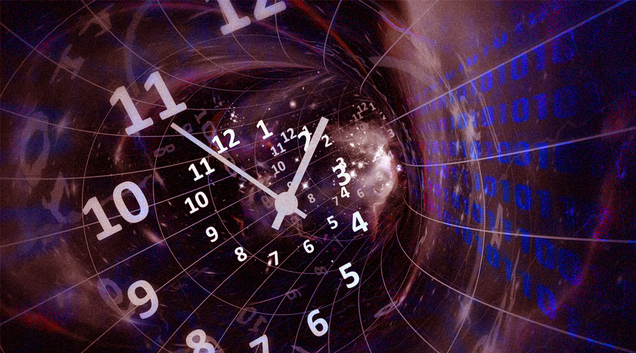

Time travel is the hypothetical activity of traveling into the past or future. Time travel is a widely recognized concept in philosophy and fiction, particularly science fiction. In fiction, time travel is typically achieved through the use of a hypothetical device known as a time machine. The idea of a time machine was popularized by H. G. Wells' 1895 novel The Time Machine.[1] It is uncertain if time travel to the past is physically possible, and such travel, if at all feasible, may give rise to questions of causality. Forward time travel, outside the usual sense of the perception of time, is an extensively observed phenomenon and well-understood within the framework of special relativity and general relativity. However, making one body advance or delay more than a few milliseconds compared to another body is not feasible with current technology. As for backward time travel, it is possible to find solutions in general relativity that allow for it, such as a rotating black hole. Traveling to an arbitrary point in spacetime has very limited support in theoretical physics, and is usually connected only with quantum mechanics or wormholes.
Some theories, most notably special and general relativity, suggest that suitable geometries of spacetime or specific types of motion in space might allow time travel into the past and future if these geometries or motions were possible.[23]: 499 In technical papers, physicists discuss the possibility of closed timelike curves, which are world lines that form closed loops in spacetime, allowing objects to return to their own past. There are known to be solutions to the equations of general relativity that describe spacetimes which contain closed timelike curves, such as Gödel spacetime, but the physical plausibility of these solutions is uncertain. Many in the scientific community believe that backward time travel is highly unlikely. Any theory that would allow time travel would introduce potential problems of causality.[24] The classic example of a problem involving causality is the "grandfather paradox," which involves travelling to the past and intervening in the conception of one's ancestors (causing the death of an ancestor before said conception being frequently cited). Some physicists, such as Novikov and Deutsch, suggested that these sorts of temporal paradoxes can be avoided through the Novikov self-consistency principle or a variation of the many-worlds interpretation with interacting worlds.[25] General relativity Time travel to the past is theoretically possible in certain general relativity spacetime geometries that permit traveling faster than the speed of light, such as cosmic strings, traversable wormholes, and Alcubierre drives.[26][27]: 33–130 The theory of general relativity does suggest a scientific basis for the possibility of backward time travel in certain unusual scenarios, although arguments from semiclassical gravity suggest that when quantum effects are incorporated into general relativity, these loopholes may be closed.[28] These semiclassical arguments led Stephen Hawking to formulate the chronology protection conjecture, suggesting that the fundamental laws of nature prevent time travel,[29] but physicists cannot come to a definite judgment on the issue without a theory of quantum gravity to join quantum mechanics and general relativity into a completely unified theory.[30][31]: 150